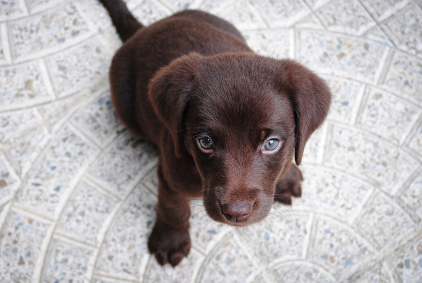
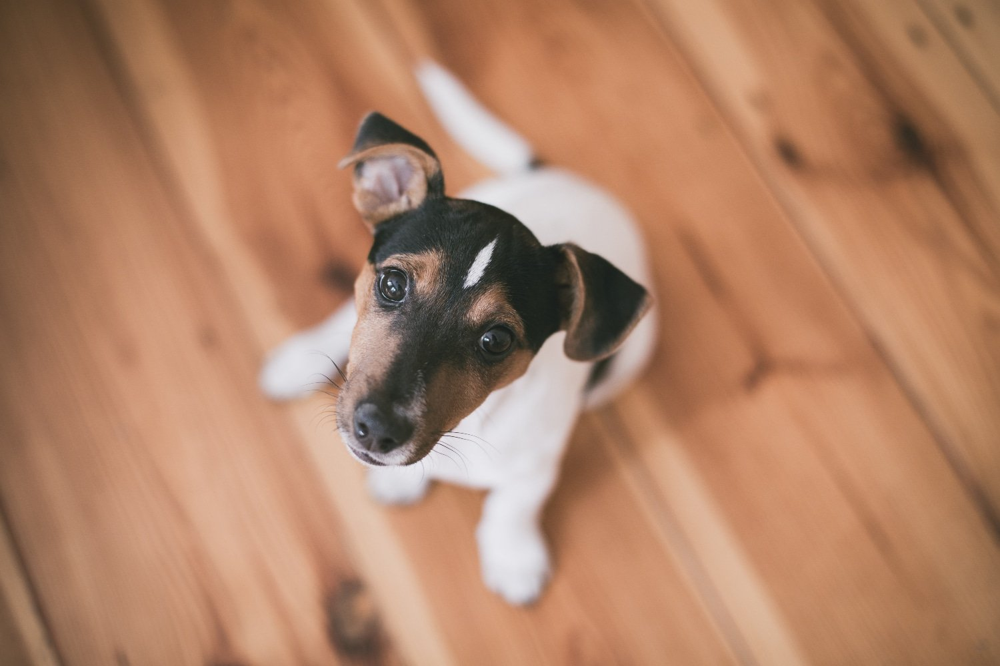
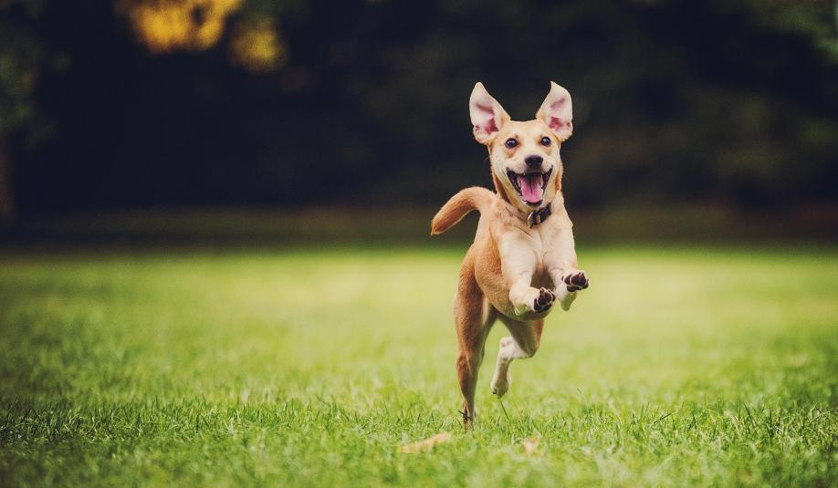

Nome: Hulk
Atende por: Coquinho
Visto pela última vez: 30/10/22
Telefone: (35) 99565-7823

Nome: Puma
Atende por: Branquinho
Visto pela última vez: 07/11/22
Telefone: (35) 99853-6897

Nome: Toddy
Atende por: Toddynho
Visto pela última vez: 09/11/22
Telefone: (35) 98867-4548